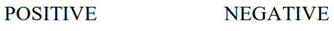

Now you will classify concepts. For each concept that appears in the center of the screen, quickly decide if the concept has a positive or negative connotation. If the concept has a POSITIVE connotation, press the E key. If the concept has a NEGATIVE connotation, press the I key, for example,
prison